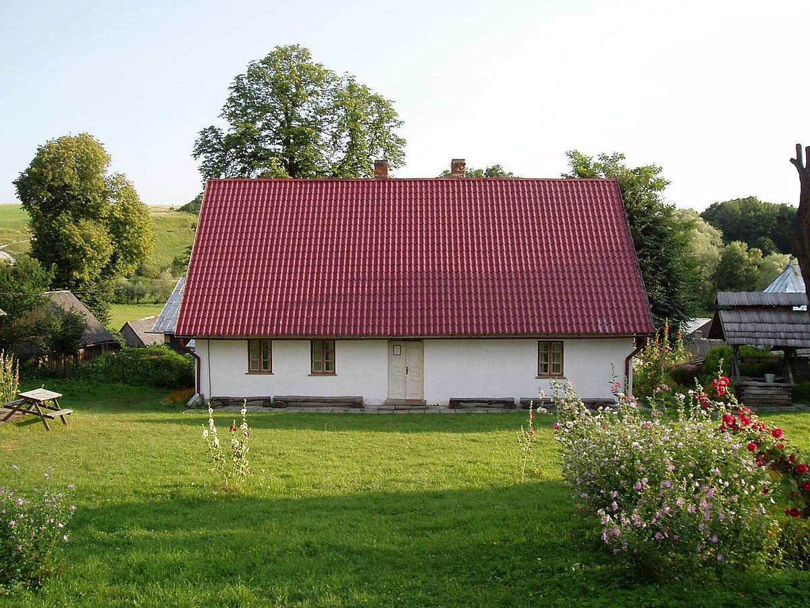
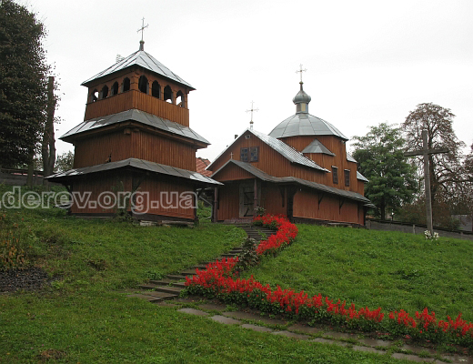
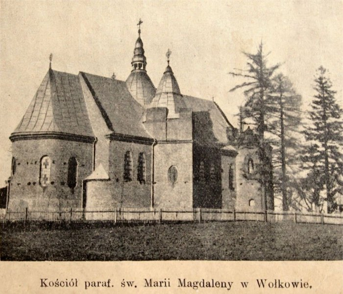
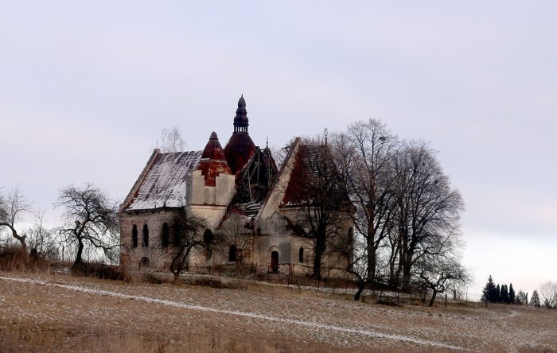
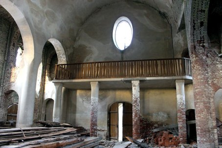
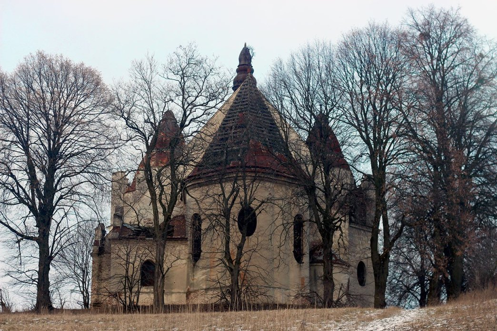

Історичні пам'ятки села Вовків

Музей-садиба Устияновичів у селі Вовків

Храм Введення Пресвятої Богородиці у Вовкові (1702р.)

Храм Марії Магдалини у селі Вовків
Галерея пам'яток
Костел Марії Магдалини у Вовкові

 
Екскурс в Історію
У селі є дві унікальні сакральні пам’ятки. Стара дерев’яна церква Введення Пресвятої Богородиці (1706р.), збудована у традиційному галицькому стилі. На церковному подвір’ї збереглось приміщення плебанії, у якій зараз знаходиться музей видатного громадського і релігійного діяча ХІХ століття, одного з провідників українського відродження Миколи Устияновича. Він був парохом цього села. Син отця Корнило Устиянович – відомий художник. У садибі, де він народився, є пам’ятник митцеві. А на пагорбі височіє занедбаний костел Св. Марії Магдалини (1910). Про нього мова піде детальніше. Римсько-католицька парафія у Вовкові з’явилася у 1563 році. Спочатку належала до деканату Львівського, з 1787 р. до Городецького, а від 1843 р. до деканату Свірзького. Костел Св. Станіслава у Вовкові, фото до 1924 року Первісний костел у Вовкові, напевно походить з ХVІ ст. і носив титул Св. Марії Магдалини. В часі турецько-татарської навали в 1620-1621 рр. храм був знищений. На його місці у 1677 році Станіслав Казимир Курдановський зі своєю сестрою збудували новий, дерев’яний костел під титулом Св. Станіслава. В часі візитації Миколи Визицького в 1741 р. у вовківському костелі було кілька вівтарів з образами Матері Божої, Св. Трійці, Св. Станіслава, Св. Антонія, Св. Марії Магдалини. Згідно з переказами у 1798 році костел ремонтували. У 1924 році, через поганий стан будівлі, комісія під керівництвом консерватора Йозефа Пйонтровського вирішила розібрати храм. Костел Св. Марії Магдалини у Вовкові на 1937 рік А вже 24 травня 1924 р. ксьондз Казимир Дзержинський виконав посвячення кам’яного фундаменту під новий костел, автором проекту якого став архітектор Броніслав Віктор. Будівництво тривало до 1929 року. Того ж року, 27 жовтня костел було освячено під титулом Св. Марії Магдалини. У 1930 р. в інтер’єрі храму встановлено органи. Сліди попадання снаряду та куль у костел, фото 2015 року В часі радянсько-німецької війни в липні 1944 р. Вовків кілька разів переходив з рук у руки воюючих сторін. Внаслідок артилерійських пострілів храм зазнав пошкодження, а в результаті попадання бомби була зруйнована плебанія святині. В квітні 1946 р. парафіяни залишили Вовків переїхавши до Польщі. Костел замінили на церкву, а в 1948 – на колгоспний склад, де зберігали мінеральні добрива. Храм розташований на підвищенні. Будівня несиметрична в плані і багата на дрібні деталі, мурована з цегли, вівтарем спрямована на південь. Корпус костелу творить нава, до якої прилягають два ряди бічних каплиць. Від заходу до стін нави і вівтаря прибудована захристія. В інтер’єрі храму практично нічого не збереглося, але схематизми І пол. ХХ ст. вказують на велике багатство внутрішніх деталей костелу та оздоблення вівтарів, ось наприклад: Вівтар головний: на 1935 р. – дерев’яний; в центрі образ Матері Божої з Дитятком Ісус (Матір Божа Ласкава), копія з ІІ пол. ХІХ ст. образу з 1712 р.; по боках фігури Св. Петра і Павла. Бічний вівтар (лівий): з різьбою Христос Розп’ятий і образи Св. Терези і Св. Марії Магдалини. Бічний вівтар (правий): з різьбою Ісус Христос, з давньою поліхромією ХVІІІ ст. Вівтар каплиці зимової: ХІХ ст., з різьбою Найсвятішого Серця Ісуса і образом Матері Божої. Ікона Мати Божа з Дитятком (Мати Божа Ласкава), 2001 рік Ікона Св.Марії Магдалини, 2015 рікІкона Св. Марія Магдалина, 2001 рік Скульптури костелу Св.Марії Магдалини, 1924 рік Правда, вівтарі, які були в храмі датуються значно пізнішим віком ніж сама святиня. Взагалі костел за своїми розмірами є одним з найбільших в Галичині (в схематизмах зазначається, що в костелі були дерев’яні лавки на 200 осіб). Дослідники вважають храм найяскравішим представником своє доби в стилі ар-деко. У цьому костелі свого часу знімали перший український детектив «Злочин з багатьма невідомими» за мотивами твору І. Франка. А що до самого Франка, то письменник любив тут відпочивати, ходив сюди з друзями зі Львова пішки – навпростець. Його дружина провела тут усе літо, коли була вагітна старшим сином. Сьогодні будівля знаходиться в стані руїни. З дороги споруда виглядає спавді велично і розкішно, але насправді костел дуже постраждав. Частина покрівлі даху відсутня, а місцями є наскрізні отвори. На стінах святині видно сліди руйнувань під час наступу радянських військ. Збоку від головного входу є циліндрична прибудова, яка колись завершувалась куполом – це гвинтові сходи на балкон другого поверху всередині. Нічого не залишилося і в самому храмі, те що уціліло зараз зберігається в костелах Польщі. І хоча святиня має охоронний номер (1946-М), на жаль, в наших реаліях, це нічого не означає. Переглядаючи фотографії кількарічної давнини та порівнюючи їх із теперішніми, зрозуміло, що надії на ремонт костелу залишаються марними. Будемо сподіватися, що це тільки наразі. "Треба добре знати свій край,
бо рідна земля – все одно,
що велика сім’я,
а земляки – все одно, що родичі.»
Софія Русова
Новини
Усі ми знаємо, що у Західній України багато красивих сіл, які розташовані у самих Карпатах. Вовків, без перебільшення, – одне з наймальовничіших сіл Львівщини. І хоча від нього до Карпат ще дуже далеко, саме тут ми побачили якесь незвичайне буяння природи та неповторний ландшафт. За те, що тут багато мальовничих пагорбів, місцину називають Львівськими Карпатами. І саме Вовків здався нам тим місцем, де слід відпочити від міської метушні. Село розташоване зовсім недалеко від Львова – якщо навпростець, то десь кілометрів з 10. Але віддаленість від основних доріг зіграла на користь красі Вовкова: тут тихо, зелено, і все наповнено пташиним співом. Хоча місцевих мешканців така ідилія зовсім не тішить – автобус сюди їздить рідко, дороги тут роздовбані, та й з роботою зовсім важко. І ми відчули цю віддаленість від цивілізації, коли довелося частину шляху до Вовкова йти пішки, адже транспорту не дочекалися. Але про то згодом. Що стосується назви села, деякі дослідники вважають, що вовки тут ні до чого, а походить назва від слова «волочити». Колись тут були озера, човни між якими волочили по суші. У письмових джерелах Вовків вперше згадується у 1398 році. Колись він був містом. Але наприкінці XVIII ст. була прокладена Стрийська дорога, яка пройшла повз Вовків; місто стало занепадати, перетворилося на село. Навіть не віриться, що тут було справжнє місто. Але для невіруючих у Вовкові навіть збереглися контури древньої трикутної ринкової площі, які були властиві, звичайно ж, середньовічним містам, але ж ніяк не селам. На жаль, ми не встигли побачити давній центр колишнього міста, проте побачили цінні споруди більш нового часу. Коли їдеш по Вовкову, то над дорогою, на пагорбі, видно костел Марії Магдалини. Одна з найцікавіших культових споруд Галичини ХХ століття була побудована у 1924 р. Створив костел відомий польський архітектор Броніслав Віктор, який є автором багатьох споруд у Галичині, Зокрема, ратуші у Жовкві. Костел, збудований у вишуканому стилі ар-деко, виконаний з надзвичайним смаком. Він має різний вигляд з якоюсь характерною деталлю з кожного з чотирьох боків. Найбільш цікавою особливістю, на наш погляд, є кругла вежа, прибудована ліворуч від входу, схожа на вежі середньовічних замків. За радянських часів у костелі був склад мінеральних добрив. Зараз храм перебуває у жалюгідному стані. Цікавим є факт, що у ньому у 1993 р. знімалися сцени з першого українського детективу «Злочин з багатьма невідомими» за мотивами твору Івана Франка. Доля самого Франка пов’язана з Вовковим. Він любив тут відпочивати, тут провела ціле літо його дружина під час вагітності. Ще у селі є красива дерев’яна Введенська церква (1706), яка симпатично розташована на невеличкому узвишші. Тут свого часу правив відомий громадський діяч та літератор отець Микола Устиянович. У хаті-плебанії, що збереглася біля церкви, народився його син Корнило Устиянович – відомий український художник. Тепер тут музей. Розташований він за церквою, тут же на подвір’ї встановлений пам’ятник Корнилові Устияновичу. Дуже затишне місце. Також у селі у 1877-1890 рр. жив Ржегорж Франтішек – чеський етнограф, дослідник народного побуту і фольклору Галичини.

Contact Us